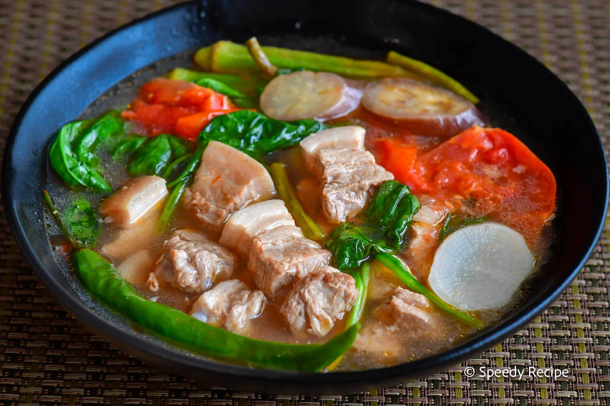
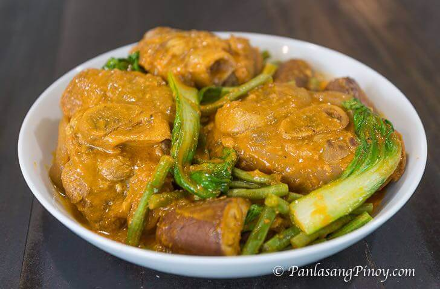
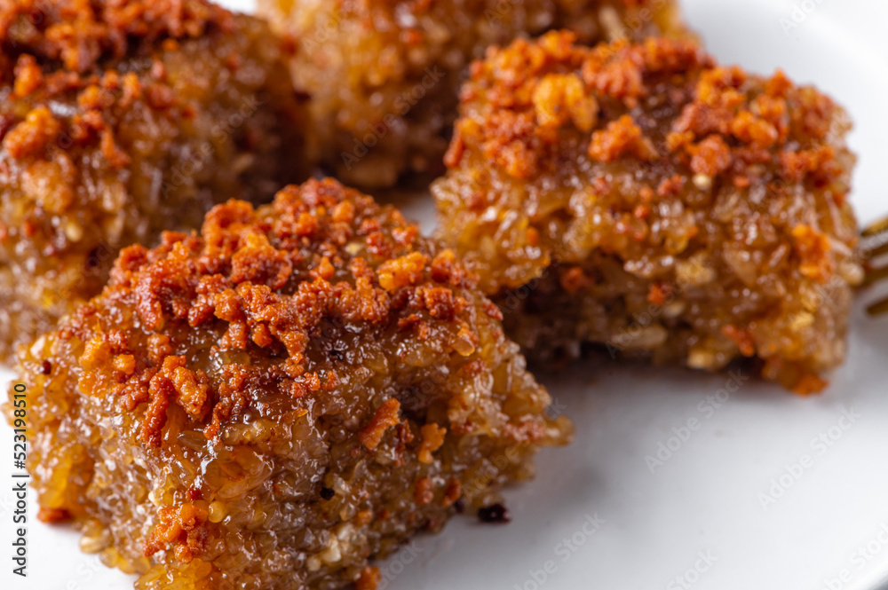

Featured Recipes

Chicken Adobo
Ingredients: Chicken, soy sauce, vinegar, garlic, bay leaves, peppercorns, and onions.
Procedure: Marinate chicken in soy sauce and garlic. Sear in a pan, then simmer with vinegar, bay leaves, and peppercorns until tender. Add onions for extra flavor. [1]

Pancit Bihon
Ingredients: Rice noodles, chicken, shrimp, carrots, cabbage, soy sauce, and garlic.
Procedure: Soak rice noodles in water. Stir-fry garlic, chicken, and shrimp. Add vegetables and soy sauce. Toss noodles until evenly mixed. [2]

Halo-Halo
Ingredients: Shaved ice, sweetened beans, fruits, milk, and leche flan.
Procedure: Layer beans, fruits, and shaved ice in a tall glass. Pour milk over the ice and top with leche flan. Mix before eating. [3]

Sinigang na Baboy
Ingredients: Pork ribs, tamarind mix, kangkong, radish, tomatoes, onions, and green chilies.
Procedure: Simmer pork with onions and tomatoes until tender. Add tamarind mix, radish, and green chilies. Simmer until veggies are cooked. Add kangkong last. [4]

Kare-Kare
Ingredients: Oxtail, tripe, peanut butter, annatto powder, eggplant, string beans, and banana blossom.
Procedure: Boil oxtail and tripe until tender. Sauté garlic and onions, then mix in peanut butter and annatto. Add broth and simmer. Add vegetables and cook until tender. Serve with bagoong. [5]

Biko
Ingredients: Sticky rice, coconut milk, brown sugar, and latik.
Procedure: Cook sticky rice with coconut milk and brown sugar until thickened. Transfer to a tray, flatten, and top with latik. Let cool before serving. [6]